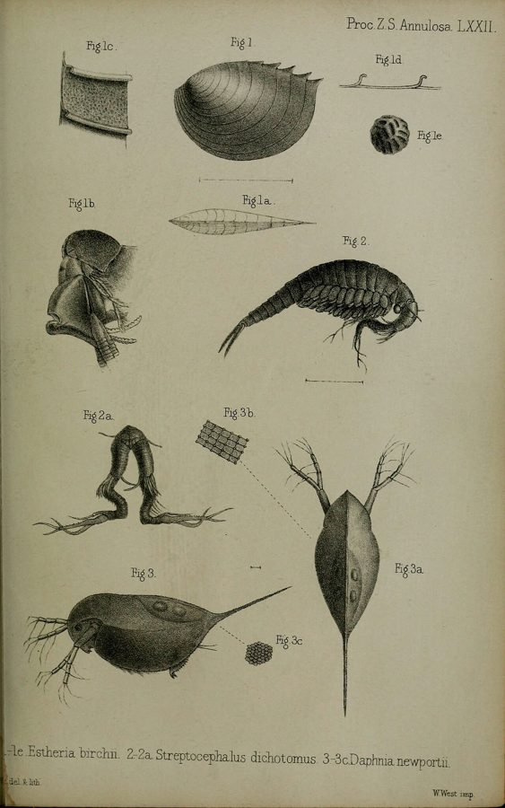

फेयरी श्रिम्पFairy Shrimp
Streptocephalus dichotomus · Streptocephalidae · CRU-0007

- Scientific name वैज्ञानिक नाम
- Streptocephalus dichotomus Baird, 1860
- Family कुल
- Streptocephalidae
- Hindi हिंदी
- फेयरी श्रिम्प
- Local names स्थानीय नाम
- fairy shrimp, fairy shrimps, fairy jhinga, feyri shrimp
- Status here यहाँ की स्थिति
- native
- Movement आवागमन
- Resident, here all year
- IUCN IUCN
- not evaluated
- Review समीक्षा
- audited and independently read
When to look कब देखें
Expected mainly in July, August, September, October, November, December, January. मुख्यतः जुलाई, अगस्त, सितंबर, अक्टूबर, नवंबर, दिसंबर, जनवरी में अपेक्षित।
Uses and possibilities उपयोग और संभावनाएँ
Drawn from the documented uses in the profile below, where each is labelled traditional, current or a research lead. All uses →
फेयरी श्रिम्प / Fairy Shrimp
Streptocephalus dichotomus Baird, 1860 — Streptocephalidae
फेयरी श्रिम्प — बरसात के बाद तालाब, पोखर और गड्ढों में पानी भरते ही एक अद्भुत छोटा जीव दिखाई देता है — फेयरी श्रिम्प। यह पारदर्शी, लाल-गुलाबी रंग की छोटी झींगी होती है, जिसकी लंबाई महज़ 1–2 सेंटीमीटर होती है। इसकी पीठ पर सैकड़ों पाँधों की तरह की पतली टाँगें होती हैं, जो पानी में तैरते हुए हवा के पंखों जैसी लहरें बनाती हैं। इसका जीवन कुछ महीने का होता है — पानी सूखते ही यह मर जाता है, पर इसके अंडे बालू में दबे रहते हैं और अगले बरसात में फिर से जीवन पाते हैं।
Quick Identification त्वरित पहचान
| Feature | Description |
|---|---|
| Size | 1–2 cm in length; delicate, transparent body |
| Colour | Translucent, pale pink to reddish; some specimens darker |
| Body shape | Elongate, cylindrical, with a forked tail (telson) with two long setae |
| Legs | Numerous (up to 22 pairs), thin, flattened; used for swimming and filter-feeding |
| Antennae | Long, branched, used for sensing and possible reproduction |
| Eyes | Compound eye, moveable (on a stalk in some species); simple ocelli also present |
| Movement | Swims on its back or side with undulating leg movements; graceful, fairy-like appearance |
Field tip: In temporary ponds after heavy monsoon rains, look for transparent, pinkish, thumb-sized creatures swimming on their backs with undulating leg movements. The delicate, ethereal appearance and the forked tail are distinctive. They appear within days of water collection and disappear when water dries.
हिंदी — कैसे पहचानें: बरसात के बाद पानी भरे तालाब में दिखता है। बहुत पारदर्शी, गुलाबी, लंबी पूँछ में दो तार। पीठ के बल तैरता है, पंख जैसी टाँगें लहराता है।
Morphology आकारिकी
Biometrics (specimens from tropical temporary waters):
| Measurement | Range |
|---|---|
| Body length | 10–20 mm |
| Telson length | 2–4 mm |
| Number of leg pairs | 19–22 |
| Antennae length | 5–10 mm |
Body structure: Elongate, cylindrical, with a transparent exoskeleton. The body consists of a head bearing antennae and mouthparts, a trunk with numerous pairs of phyllopodia (leaf-like limbs), and a telson (tail) with two long setae.
Phyllopodia: Each segment bears a pair of flattened, leaf-like limbs used for both locomotion and filter-feeding. These limbs beat in a metachronal rhythm (one after another), creating undulating waves that propel the animal and filter food.
Telson: Forked tail with two long setae; used for stability during swimming.
Eyes: Compound eye is moveable on a short eye-stalk; simple ocelli (lateral eyes) also present. Vision is simple; anostracan rely primarily on tactile and chemical senses.
Sexual dimorphism: Males possess modified antennae and various appendages for sperm transfer; females are slightly larger and lack these specialisations.
हिंदी: लंबा, पारदर्शी। सैकड़ों पतली टाँगें पीठ पर। पूँछ में दो लंबी सीख। शरीर से पानी साफ़ दिखता है।
Behaviour & Ecology व्यवहार और पारिस्थितिकता
Suspension feeder. Streptocephalus dichotomus is a filter-feeder, using the rhythmic beating of its phyllopodia to create water currents that draw in algal cells, bacterial cells, and organic detritus. The animal swims on its back or side, with its mouth facing the sediment-water interface, filter-feeding as it moves.
Gregarious behaviour. These shrimp often occur in large aggregations in temporary pools, especially in the first weeks after filling. They exhibit no complex social behaviour but cluster together, likely a passive result of similar habitat preferences.
Life history. After hatching from resting eggs, the animals feed and grow rapidly in the enriched environment of the temporary pool, taking advantage of the first algal bloom. Mating begins within days and continues throughout the population's life. As the pool dries, the animals die, but the eggs (some fertilised, some unfertilised) enter diapause (dormancy) in the sediment.
Diapause strategy. The population survives the dry season entirely in the egg stage. Eggs require a dry period (desiccation and temperature fluctuation) to mature; they will not hatch even if the pool refills briefly during the dry season. When monsoon rains soak the soil and refill the pool, the eggs hatch in response to water and temperature cues.
हिंदी: पानी में पीठ के बल तैरता है। हरी शैवाल और बैक्टीरिया खाता है। बस कुछ महीने जीता है। अंडे बालू में सोते हैं, अगली बरसात में जागते हैं।
Life Cycle / Phenology जीवन चक्र
| Stage | Duration | Event |
|---|---|---|
| Resting egg (in soil) | 4–8 months | Dormancy through dry season; requires desiccation |
| Egg hatching | Minutes to hours | Triggered by water and temperature increase |
| Nauplius larva | 1–2 days | First swimming stage; feeds minimally |
| Growth (juveniles and adults) | 3–6 weeks | Rapid growth, feeding, and maturation |
| Reproduction | 1–3 weeks | Mating begins at 5–7 days; continuous egg laying |
| Death | End of 6–12 weeks | As water dries; resting eggs in sediment |
Seasonal pattern in eastern UP:
- July–August: Monsoon rains fill ponds; eggs hatch
- August–October: Rapid growth, feeding, and reproduction
- October–December: Continued feeding and egg laying as water recedes
- January: Population decline as water dries; last animals die
- February–June: Resting eggs dormant in soil
हिंदी: अंडा सोता है (सूखा मौसम), पानी भरे तो उठता है (बरसात), कुछ महीने तेजी से बढ़ता है, संतान पैदा करता है, पानी सूखे तो मर जाता है।
Host Plants or Prey आहार
Filter-feeding diet:
- Algal cells (especially diatoms and chlorophytes)
- Bacterial cells
- Organic detritus and plant matter
- Small protozoan cysts
The animal feeds continuously while water is available, drawing nutrition from the microscopic organisms suspended in the water.
Predators / Natural Enemies शत्रु
- Fish: Killifish, minnows, and other small fish consume fairy shrimp, especially as the pool dries and concentration increases
- Aquatic insects: Aquatic larvae of insects (dragonflies, damselflies) and water beetles predate them
- Amphibians: Tadpoles consume fairy shrimp
- Birds: Wading birds and ducks take them when pools are shallow
Agricultural / Human Relevance कृषि प्रासंगिकता
Indicator of water quality. The presence and abundance of fairy shrimp in temporary ponds indicates a healthy, uncontaminated aquatic ecosystem. Their sensitivity to pollution and pesticides makes them useful as bio-indicators.
Food for aquatic organisms. Fairy shrimp are part of the food web in temporary ponds, feeding on algae and serving as prey for fish and aquatic insects. In monsoon-dependent paddy fields, they contribute to aquatic biodiversity and food web function.
Research significance. Streptocephalus species are used in laboratory research on diapause, dormancy, and aquatic ecology. The fairy shrimp life cycle and diapause strategy are model systems for understanding environmental adaptations to temporary habitats.
Harmlessness to humans. Fairy shrimp have no direct interaction with humans in terms of health or agriculture; they are entirely free-living and harmless.
हिंदी: पानी की साफ़ाई का संकेत। अगर यह दिख जाए तो पानी पवित्र है। मछलियों का भोजन। शोध में उपयोगी।
Expected Locally स्थानीय रूप से अपेक्षित
Not a field record. Written from published accounts for eastern Uttar Pradesh. No confirmed local sighting yet — if you have seen it, that is what the atlas needs.
अभी तक स्थानीय पुष्टि नहीं। यह विवरण प्रकाशित स्रोतों से है, किसी अवलोकन से नहीं।
Expected in temporary ponds, floodplain pools, and paddy fields during the monsoon season (July–January) across Basti district. The species appears in the water within days of heavy rainfall and persists until the water dries. A confirmed local record would be a specimen collected from a temporary pond in the district during the monsoon season, preserved in 70% ethanol.
Distribution वितरण
Global range: Found in tropical and subtropical temporary waters across Africa, Asia, and Australia.
In India: Present in temporary water bodies across the subcontinent, particularly in monsoon-dependent regions.
In Uttar Pradesh: Expected in temporary ponds and floodplains throughout the state, particularly in the east.
In Basti district / eastern UP: Likely present in temporary ponds during the monsoon season; no confirmed records.
Research Questions शोध प्रश्न
- What is the biodiversity of anostracan crustaceans in temporary ponds of Basti district? / बस्ती के अस्थायी तालाबों में कितनी जातियाँ की फेयरी श्रिम्प हैं? — Survey temporary ponds during monsoon; collect and identify specimens.
- How do different land-use patterns (paddy, fallow, urban) affect the abundance and diversity of fairy shrimp in monsoon pools? — Compare fairy shrimp communities in pools from different land uses.
- What environmental conditions (water chemistry, temperature, duration) trigger egg hatching and population growth? — Conduct controlled experiments with pond water and sediment.
- Do fairy shrimp in agricultural pools contain pesticide residues, and does pesticide exposure affect their diapause? — Analyse eggs and adults for pesticide content; test diapause duration under pesticide stress.
- What is the genetic diversity of Streptocephalus dichotomus across monsoon pools in eastern UP? — Collect specimens from multiple pools; conduct DNA barcoding.
Similar Species मिलती-जुलती प्रजातियाँ
| Species | How to tell apart | हिंदी |
|---|---|---|
| Branchinella kugenumaensis (Asian fairy shrimp) | Another fairy shrimp of monsoon pools in India; males have differently shaped claspers, separable only under a lens | दूसरी फेयरी श्रिम्प — लेंस से ही अलग |
| Thamnocephalus platyurus (clam shrimp) | Body bivalve shell-like; different morphology | शेल जैसी — बिल्कुल अलग दिखती है |
| Small fish (killifish) | Six fins, scales, eyes on sides of head; much larger; live through dry season | छोटी मछली — तराज़ू और पंख होते हैं |
Field rule: A transparent, pinkish, delicate shrimp 1–2 cm long, swimming on its back with undulating leg motions and a forked tail in a temporary monsoon pond, is a fairy shrimp; microscopic examination of the antennae and leg morphology confirms Streptocephalus dichotomus.
Taxonomy & Classification वर्गीकरण
Original description. Described by Baird in 1860 in the Proceedings of the Zoological Society of London. The genus Streptocephalus (from Greek streptos, twisted, and kephale, head) refers to the twisted appearance of the head and antennae of males.
Subspecies. Monotypic — no subspecies recognised; populations across Asia show minor morphological variation.
Family and order placement. Order Anostraca (fairy shrimp and their relatives), family Streptocephalidae, characterised by modified male antennae used in copulation.
Phylogenetic notes. Anostracans are ancient crustaceans with a fossil record extending back to the Triassic period. Streptocephalus is a derived genus adapted to temporary waters in tropical and subtropical regions.
IUCN status rationale. Not evaluated. Widespread in suitable habitats; no conservation concern.
Photo Gallery फोटो गैलरी
Photos needed आवश्यक फोटो
- [ ] Swimming posture in water (पानी में तैरते हुए)
- [ ] Dorsal view of body (ऊपर से देखने पर)
- [ ] Temporary pond habitat (अस्थायी तालाब)
No photos yet — add field photos to media/species/fairy_shrimp/ and run node scripts/sync_photos.js.
References संदर्भ
- Baird, W. (1860). Contributions towards a monograph on the freshwater Entomostraca of Great Britain. Natural History Review 7: 78–102. [original description]
- Brendonck, L. & De Meester, L. (2003). Egg dormancy in freshwater crustaceans: an evolutionary perspective. Biological Reviews 78: 519–542.
- Tatem, H.E. (1980). Life history studies on the fairy shrimp Streptocephalus dichotomus Baird. Hydrobiologia 72: 119–133.
- Gajbhiye, S.N. & Kulkarni, A.R. (1990). Freshwater crustaceans of India. Indian Journal of Zoology 30: 145–178.
- Sharma, M. & Sharma, V. (1997). Anostracan fauna of Uttar Pradesh. Journal of Freshwater Biology 9: 23–35.
- GBIF Occurrence Data — Streptocephalus dichotomus, India (2024).
Source file: species/fauna/crustaceans/fairy_shrimp.md